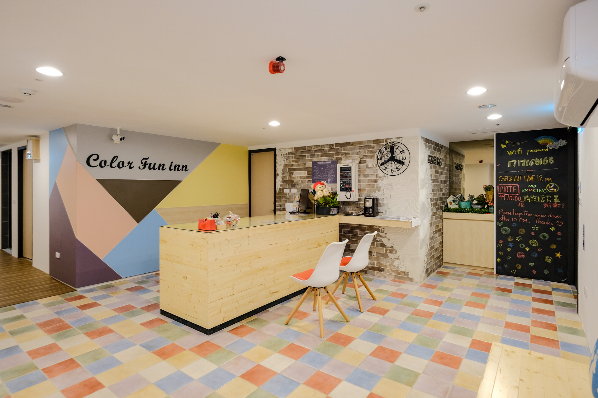

房型種類/服務
關於繽紛樂
繽紛樂位置
聯絡我們/查詢
繽紛樂旅店詳細前往方法
捷運
搭乘紅線至三多商圈站1號出口，步行約10分鐘左右抵達。
自行開車
南下：由國道一號高雄交流道中正一路出口(367B高雄)下，到三多一路右轉，中華四路再左轉，直達繽紛樂旅店。
北上：由國道一號高雄交流道三多一路出口(367C高雄)下，並左轉，中華四路再左轉，直達繽紛樂旅店。
繽紛樂旅店詳細位置
高雄苓雅區中華四路75號7樓 